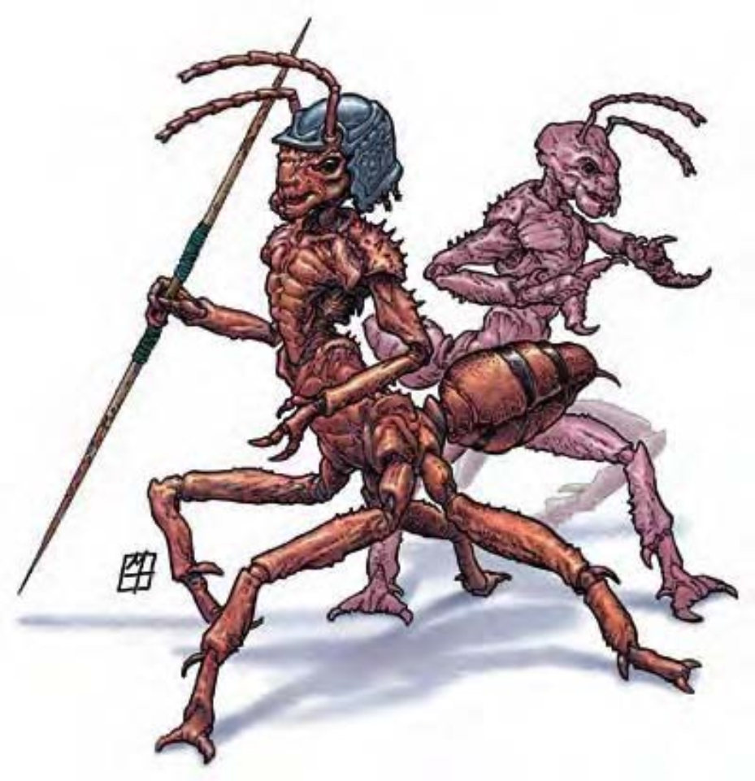

弗米蚁族原生于机械规律界，他们会四处扩张殖民，将所有遇上的活物收编进巢穴当劳工。
弗米蚁族唯一的生存目的就是扩张巢穴，占领更多殖民地，成员都毫不犹豫地执行任何命令。因此弗米蚁族会主动攻击俘虏其他生物，强迫他们帮忙扩建巢穴。如果这些被“招募”来的工人不愿听命，弗米监工蚁会使用心灵能力支配他们。
弗米蚁族的外型介于蚂蚁和人马之间，棕红色的甲壳覆盖全身，体型和特征随种类而有所不同。
战斗弗米蚁族具有极强的侵略性，会试图俘虏所有遇上的生物。只要巢穴或蚁后受到任何一点威胁，就会立刻发动攻击，至死方休。如果接受到上级命令，弗米蚁族也会马上攻击。
集体意识 (特异)：只要保持在蚁后50英里以内，所有弗米蚁族就可以随时互通声息。若有任何一只发觉危险，其他弗米蚁族也会立即察知。只要弗米蚁族中至少还有一只未陷入措手不及状态，则整群弗米蚁族亦同。除非整群都被夹击，否则弗米蚁族中的单个个体不会被夹击。
弗米蚁族的城市巨大而复杂，令人难以置信。数百只个体栖息其中，坚守与生俱来的工作岗位，井井有条但缺乏进步的能力。工蚁会听从兵蚁、蚁卫或蚁后号令，兵蚁接受直属蚁卫长官或蚁后的指挥。蚁卫只听命于蚁后，但随着工作表现的优劣，又会再区分出种种阶级，这些阶级象征的并非权势，而是声望。也就是说，声望最崇高的蚁卫才能担当护卫蚁后的重责大任。弗米监工蚁的地位约略相当于兵蚁，但他们通常不会和其他弗米蚁族互动。
弗米工蚁的大小跟豺狼或牛头犬差不多，外形像蚂蚁，但头和胸部直立举起，肩膀近似人类，手臂末端有粗略的手掌，爪子圆钝。
工蚁在弗米蚁族中地位最低，数量也最多。他们生存的唯一目的就是为巢穴效力，处理所有必要的繁杂琐事。
虽然弗米工蚁不会说话，还是可以用肢体动作来传递某些简单概念（例如：危险）。如果处于集体意识范围内，就可以沟通无碍，然而受限于偏低的智力，他们能接受的概念还是不多。
弗米工蚁长约3英尺，上半身直立高度可达2.5英尺，重约60磅，有手掌但只能执行杂务。
战斗：只有在保卫巢穴时，弗米工蚁才会以大颚进行啮咬攻击。在计算伤害减免时，弗米工蚁的天生武器和持用武器都视为守序阵营。
“治疗重伤” (类法术能力)：只要有八只弗米工蚁齐聚，同时进行整轮动作，就可以治疗单一生物所受到的伤害，效果与“治疗重伤”法术相同 (施法者等级7)。
“完全修复” (类法术能力)：只要有三只弗米工蚁齐聚，同时进行整轮动作，就可以修复物品，效果与“完全修复”法术相同 (施法者等级7)。
弗米兵蚁的体型相当于矮种马，外形像蚂蚁，但头和胸部直立举起，口部生着强而有力的大颚，肩膀近似人类，手臂末端有壮硕的手掌，爪子尖利，腹部有毒刺。
弗米兵蚁只为战斗而生。兵蚁的阶级略高于工蚁，能够藉由通过集体意识来传递作战计划或向上级长官进行汇报。除此之外则不会说话。
弗米兵蚁长约5英尺，上半身直立高度可达4.5英尺，重约180磅。
战斗：弗米兵蚁是相当难缠的对手，可以同时以爪抓、啮咬和有毒螫刺进行攻击。藉由通过集体意识的优势，能够执行相当精准有效的战略。在计算伤害减免时，弗米兵蚁的天生武器和持用武器都视为守序阵营。
毒素 (特异)：每次造成伤害后，弗米兵蚁就会注入毒素 (强韧检定的DC=14)。初始伤害与后续伤害皆为1d6点力量伤害。豁免检定DC的调整值与体质调整值相同。
弗米监工蚁的体型相当于矮种马，外形像蚂蚁，但头和胸部直立举起，看来好像没有嘴巴，肩膀近似人类，手臂末端有壮硕的手掌，爪子尖利，腹部有毒刺。
弗米监工蚁和兵蚁外型非常相像，唯一的差别是没有大颚，甚至连嘴巴都没有。弗米监工蚁只能靠心灵感应来沟通，而且得依靠受支配生物的心灵能量为生。
弗米监工蚁的工作是搜集并控制其他异类生物，将他们纳入巢穴组织中。简单来说，弗米监工蚁负责奴役其他生物。他们并非为了个人喜好而奴役他人，在他们的观念中，一切都是为了扩张巢穴而采取的最有效手段，任何具有理性的生物都应该服膺这个目标。如果弗米监工蚁可以采用其他方式招募劳工，不需诉诸本身的“支配怪物”能力，他们也非乐意。
依照少数能够逃出弗米蚁族巢穴的幸运儿说法，整个巢穴根本就是一座劳动营，虽然弗米蚁族不会刻意虐待劳工，但他们完全没有感情和怜悯之心。
弗米监工蚁的体型跟兵蚁差不多。
战斗：一般来说，弗米监工蚁完全仰赖受支配的奴隶为其战斗。如有必要，他们也可以靠爪抓和有毒螯刺自卫。在计算伤害减免时，弗米监工蚁的天生武器和持用武器都视为守序阵营。
支配怪物 (超自然)：针对体型不超过大型的敌人，弗米监工蚁可以使用此能力控制心灵，效果与“支配怪物”法术相同 (施法者等级10，通过意志检定则无效，DC=17)。通过豁免检定的生物在24小时内不会再受到同一个弗米监工蚁的支配怪物能力影响。一只弗米监工蚁同时最多可以支配四只生物。豁免检定DC的调整值与魅力调整值相同。
受支配生物 (特异)：无论何时，弗米监工蚁的身边一定有一只受支配的生物 (你可以指定或随机掷骰选择一只挑战级数4的生物)。
毒素 (特异)：每次造成伤害后，弗米监工蚁就会注入毒素 (强韧检定的DC=15)。初始伤害与后续伤害皆为1d6点力量伤害。豁免检定DC的调整值与体质调整值相同。
弗米蚁卫的体型相当于轻型马，外形像蚂蚁，但头和胸部直立举起，口部生着强而有力的大颚，头上戴着精致的青铜头盔，肩膀近似人类，手臂末端有类人的手掌，腹部有毒刺。
弗米蚁卫是弗米蚁族中的精英与其他族类不同，他们拥有完整的个性，有自己的目标、欲望和创造力，当然，这些想法几乎不会与蚁后的意志相左，所有蚁卫仍然死命效忠于她。
平时弗米蚁卫是蚁族社会的领导者，战时则担任军队的指挥官。他们是蚁后的左右手，遂行其意旨，并随时监督诸事依令运行。除此之外，弗米蚁卫还有另外一个任务，就是尽可能消弭一切无秩序的混乱事物。因此，所有崇尚或象征混乱阵营的生物 (如：史拉蟾族) 都是弗米蚁卫的死敌。
弗米蚁卫长约7英尺，上半身直立高度可达5.5英尺，重约1500磅。他们的爪子可以做精细动作，就像人类手掌。每只弗米蚁卫都戴着象征地位的青铜头盔，越精巧者就代表声望越高。
弗米蚁卫通晓弗米语和通用语。
战斗：弗米蚁卫的爪子像手掌，不能直接用来战斗。弗米蚁卫通常会用标枪进行远程攻击，枪身上涂满螯刺分泌的毒液。弗米蚁卫的战斗方式很精明，也会帮助下属 (如果有的话) 或透过集体意识指挥他们。若有混乱阵营的生物在场，弗米蚁卫会倾全力将其消灭。在计算伤害减免时，弗米蚁卫的天生武器和持用武器都视为守序阵营。
毒素 (特异)：每次造成伤害后，弗米蚁卫就会注入毒素 (强韧检定的DC=20)。初始伤害与后续伤害皆为2d6点敏捷伤害。豁免检定DC的调整值与体质调整值相同。
类法术能力：随意施展――“魅惑怪物” (DC=17)、“锐耳术 / 鹰眼术”、“侦测混乱”、“侦测思想” (DC=15)、“反混乱法阵”、“高等传送术”；每天1次――“律言” (DC=20)、“秩序之怒” (DC=17)。施法者等级12。豁免检定DC的调整值与魅力调整值相同。
弗米蚁后 (Formian Queen) 看来像是一只巨大臃肿的蚂蚁，附肢全都萎缩，没有任何功能。
弗米蚁后居住在整个蚁族城市的正中心，臃肿的身体根本没法离开居所。只有最忠心的弗米蚁卫才能担当服侍和守卫蚁后的重责大任。
弗米蚁后完全无法移动，然而凭借着心灵感应能力，她可以指挥范围内所有弗米蚁族，并听取下属报告。弗米蚁后长约10英尺，高约4英尺，重达3500磅。
弗米蚁后通晓弗米语和通用语，但可以用心灵感应和任何生物沟通。
战斗：弗米蚁后不战斗，因为它根本不能动。如果有必要的话，一群弗米工蚁和蚁卫 (或是受支配的奴隶) 可以搬动蚁后巨大的身体四处移动，但这种机会实在少之又少。换句话说，蚁后几乎不会离开它守备森严的居所。
虽然无法进行物理战斗，在必须自卫或保护巢穴时，蚁后还是会善用自身的法术和类法术能力。
法术：弗米蚁后可以施展秘法术，如同17级术士。一般已知术士法术 (6/8/7/7/7/6/4；豁免检定DC=15+法术等级)：
零级――“强酸四溅”、“秘法印记”、“晕眩术”、“侦测魔法”、“光亮术”、“法师帮手”、“阅读魔法”、“提升抗力”、“疲乏之触”；
一级――“通晓语言”、“检定术”、“法师护甲”、“魔法飞弹”、“护盾术”；
二级――“催眠图纹”、“隐形”、“防护箭矢”、“抵抗能量伤害”、“灼热射线”；
三级――“解除魔法”、“英勇术”、“回避侦测”、“缓慢术”；
四级――“困惑术”、“侦测探知”、“艾伐黑触手”、“探知”；
五级――“寒冰锥”、“驱逐术”、“传送术”、“力墙术”；
六级――“解析咒文”、“指使术”、“防生物力场”；
七级――“七级召唤怪物术”、“灵视”、“衰竭波”；
八级――“虹光法墙”、“永恒静滞”。
类法术能力：随意施展――“安定心神” (DC=17)、“魅惑怪物” (DC=19)、“锐耳术 / 鹰眼术”、“侦测混乱”、“侦测思想”、“律言” (DC=22)、“预言术”、“怪物定身术” (DC=20)、“反混乱法阵”、“秩序之怒” (DC=19)、“秩序护盾” (DC=23)、“真实目光”。施法者等级17。豁免检定DC的调整值与魅力调整值相同。
心灵感应 (超自然)：弗米蚁后能够透过心灵感应与周遭50里范围内被她察觉到的任何智慧生物沟通。
（此表格整合了工蚁、兵蚁、监工蚁、蚁卫及蚁后的完整数据，方便您直观对比不同阶级的特性。）
| 资料栏位 | 弗米工蚁 | 弗米兵蚁 | 弗米监工蚁 | 弗米蚁卫 | 弗米蚁后 |
|---|---|---|---|---|---|
| 生命骰 | 1d8+1 (5HP) | 4d8+8 (26HP) | 6d8+12 (39HP) | 12d8+48 (102HP) | 20d8+100 (190HP) |
| 先攻 | +2 | +3 | +7 | +8 | -5 |
| 速度 | 40英尺 (8格) | 40英尺 (8格) | 40英尺 (8格) | 50英尺 (10格) | 0英尺 |
| 防御等级 | 17 (+1体型、+2敏捷、+4天生)、接触13、措手不及15 | 18 (+3敏捷、+5天生)、接触13、措手不及15 | 19 (+3敏捷、+6天生)、接触13、措手不及16 | 28 (-1体型、+4敏捷、+15天生)、接触13、措手不及24 | 23 (-1体型、+14天生)、接触9、措手不及23 |
| 基本攻击/擒抱 | +1 / -2 | +4 / +7 | +6 / +10 | +12 / +20 | +20 / +24 |
| 攻击 | 啮咬+3近战 (1d4+1) | 螫刺+7近战 (2d4+3附加毒素) | 螫刺+10近战 (2d4+4附加毒素) | 螫刺+15近战 (2d4+4附加毒素)；或标枪+15远程 (1d6+4) | ― |
| 全力攻击 | 啮咬+3近战 (1d4+1) | 螫刺+7近战 (2d4+3附加毒素)及2爪抓+5近战 (1d6+1) 及啮咬+5近战 (1d4+1) | 螫刺+10近战 (2d4+4附加毒素)及2爪抓+8近战 (1d6+2) | 螫刺+15近战 (2d4+4附加毒素) 及啮咬+13近战 (2d6+2)；或标枪+15 / +10远程 (1d6+4) | ― |
| 空间/触及 | 5英尺 / 5英尺 | 5英尺 / 5英尺 | 5英尺 / 5英尺 | 10英尺 / 5英尺 | 10英尺 / 5英尺 |
| 特殊攻击 | ― | 毒素 | 支配怪物、受支配生物、毒素 | 毒素、类法术能力 | 类法术能力、法术 |
| 特殊能力 | “治疗重伤”、集体意识、对毒素、石化、寒冷免疫、“完全修复”、电击抗力10、火焰抗力10、音波抗力10 | 集体意识、对毒素、石化、寒冷免疫、电击抗力10、火焰抗力10、音波抗力10、法术抗力18 | 集体意识、对毒素、石化、寒冷免疫、电击抗力10、火焰抗力10、音波抗力10、法术抗力21、心灵感应100英尺 | 快速医疗2、集体意识、对毒素、石化、寒冷免疫、电击抗力10、火焰抗力10、音波抗力10、法术抗力25 | 快速医疗2、集体意识、对毒素、石化、寒冷免疫、电击抗力10、火焰抗力10、音波抗力10、法术抗力30、心灵感应 |
| 豁免 | 强韧+3、反射+4、意志+2 | 强韧+6、反射+7、意志+5 | 强韧+7、反射+8、意志+8 | 强韧+12、反射+12、意志+11 | 强韧+19、反射―、意志+19 |
| 属性 | 力量13、敏捷14、体质13、智力6、感知10、魅力9 | 力量17、敏捷16、体质14、智力10、感知12、魅力11 | 力量18、敏捷16、体质14、智力11、感知16、魅力19 | 力量19、敏捷18、体质18、智力16、感知16、魅力17 | 力量―、敏捷―、体质20、智力20、感知20、魅力21 |
| 技能 | 攀爬+10、手艺 (任一)+5、躲藏+6、聆听+4、搜索+2、侦察+4 | 攀爬+10、躲藏+10、跳跃+14、聆听+8、潜行+10、搜索+7、侦察+8、生存+1 (追踪+3)、特技动作+12 | 攀爬+13、交涉+6、躲藏+12、威吓+13、聆听+12、潜行+12、搜索+9、察言观色+12、侦察+12、生存+3 (追踪+5) | 攀爬+19、专注+18、交涉+20、躲藏+15、知识 (任一)+18、聆听+18、潜行+19、搜索+18、察言观色+18、侦察+18、生存+3 (追踪+5) | 估价+28、唬骗+28、专注+28、交涉+32、易容+5 (冒充+7)、威吓+30、知识 (任三)+28、聆听+30、察言观色+28、法术辨识+28 (卷轴+30)、侦察+30、使用魔法装置+28 (卷轴+30) |
| 专长 | 专攻技能 (指定的手艺技能) | 闪避、多重攻击 | 闪避、精通先攻、多重攻击 | 闪避、精通先攻、灵活移动、多重攻击、跳跃攻击 | 警觉、免用材料施法B、强韧加强、精通反制法术、钢铁意志、制造物品专长 (任一)、法术极效、专攻法术 (附魔) |
| 环境 | 机械规律界 | ||||
| 组织 | 组队 (2-4) 或编队 (7-18) | 单独、组队 (2-4) 或部队 (6-11) | 单独 (1，加上1只受支配生物) 或募兵团 (2-4，每个团员都配有1个受支配生物) | 单独、组队 (2-4) 或一营 (1，加上7-18个弗米工蚁及6-11个弗米兵蚁) | 巢穴 (1，加上100-400个弗米工蚁、11-40个弗米兵蚁、4-7个弗米监工蚁各加上一个受支配生物及5-8只弗米蚁卫) |
| 挑战级数 | 1/2 | 3 | 7 | 10 | 17 |
| 宝藏 | 无 | 无 | 标准 | 标准 | 双倍标准 |
| 阵营 | 总是守序中立 | ||||
| 进化 | 2-3HD (中型) | 5-8HD (中型)；9-12HD (大型) | 7-9HD (中型)；10-12HD (大型) | 13-18HD (大型)；19-24HD (超大型) | 21-30HD (超大型)；31-40HD (巨型) |
| 等级修正值 | ― | ― | ― | ― | ― |